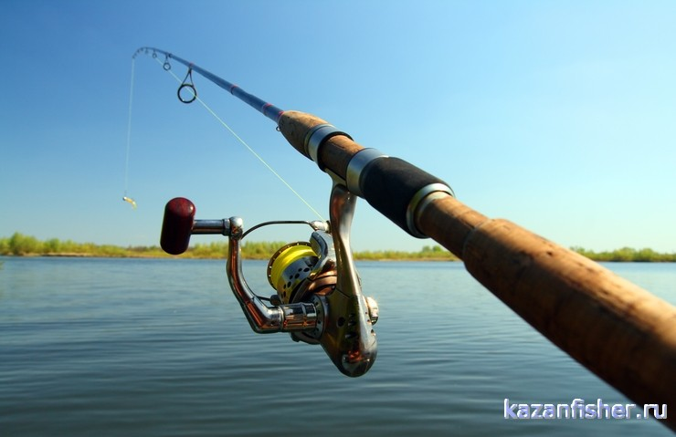

Информация к разделу
Выбор рыболовных снастей
Рыболовные снасти
Снасти для ловли рыбы. Фидер, донка, карповая снасть и др. Изготовление снастей своими руками. Правила ухода за рыболовными снастями. Накануне рыбалки подготовьте рыболовные снасти, чтобы утром не пришлось их собирать впопыхах, пытаясь ничего не забыть. Проверьте лёгкость вращения спиннинговых катушек, при необходимости смажьте специальной смазкой. Удилища обязательно упакуйте в чехлы, независимо от того, на машине вы добираетесь на рыбалку или пешком.
Готовясь к зимней рыбалке, сложите необходимые снасти в рыболовный ящик. Чтобы не забыть мотыля, положите на ящик записку. Проверьте остроту ножей ледобура. Все рыболовные снасти должны быть готовы к ловле рыбы, чтобы вам на рыбалке не пришлось вязать поводки и настраивать удочки, теряя драгоценное время. После рыбалки, собираясь домой, спешить не следует.
Лучше потратить несколько минут, и аккуратно сложить все рыболовные снасти – потом вы сэкономите массу времени. Самые распространённые рыболовные снасти Приведённые здесь рыболовные снасти широко распространены.
Летняя поплавочная снасть
Самая распространенная и всем известна рыболовная снасть. Удилища могут быть цельные, штекерные и телескопические. Удилища оснащают катушкой, реже мотовильцем. Диаметр лески и номер крючка выбирают в зависимости вида рыбы, которую собираются ловить и от особенностей водоёма.
В последнее время получила распространение штекерная удочка. При ловле на неё рыбак не забрасывает насадку, а заводит в воду, пристыковывая дополнительные колена. Штекерные удочки бывают значительной длины – до шестнадцати метров. У штекерной удочки есть несколько недостатков.
Так,рыболовные снасти для такой ловли стоят очень дорого, стоимость их сравнима со стоимостью автомобиля. К тому же их тяжело транспортировать, да ловля штекером обязывает к хорошей физической подготовке рыбака. Однако ловля штекером имеет своих верных почитателей.
Спиннинг
С помощью спиннинга ловят хищных рыб. Приманкой служат: блёсны (вертушки - колебалки), воблёры, снасточки с мёртвой рыбкой и джиговые насадки – тристеры, виброхвосты, силиконовые черви и т.д.
Для каждого метода ловли на спиннинг нужны свои рыболовные снасти. Так, спиннинговое удилище с «медленным» строем будет плохо работать на джиговой ловле. Под строем спиннингого удилища понимается скорость, с которой вершинка удилища займёт начальное положение, если удилище согнуть и резко отпустить.
Леска – одна из самых важных рыболовных снастей. Для спиннинга сейчас чаще всего используют плетёную леску. Для джиговой ловли наличие «плетёнки» - необходимое условие. Благодаря нулевому растяжению, «плетёнка» хорошо передаёт момент касания грунта джиг-головкой вершинке удилища. Катушки для спиннинга применяют безынерционные или мультипликаторные. Безынерционные позволяют дальше забросить приманку.
Мультипликаторные позволяют пальцем по леске почувствовать поклёвку. Они более мощные, но стоят дороже безынерционных катушек. Начинающему рыбаку легче пользоваться безынерционной катушкой. Спиннинговые удилища используют в качестве рыболовной снасти для донной удочки.
Донная снасть
Донная рыболовная снасть предназначена для ловли рыбы со дна. Представляет привязанное к леске грузило и крючок. Может забрасываться руками, и с помощью удилища с катушкой. Ловят на донную снасть и с лодки.
Установка донной снасти
В качестве сигнализатора поклёвки используются колокольчики или бубенчики. В рыболовных магазинах продаются световые и звуковые сигнализаторы поклёвки. Грузило может быть совмещено с кормушкой.
Грузила для донной снасти
Груз-кормушка
Широко распространённая теперь карповая снасть представляет собой разновидность донной снасти, специально предназначенной для ловли карпа. Особняком стоит донная снасть с резиновым амортизатором.

Рыболовные кружки
Кружок - свободно плавающая рыболовная снасть, состоит из катушки-поплавка, реже куска пенопласта или пустой полторашки с намотанной леской, имеет грузик и поводок с крючком. Верхняя сторона кружка окрашена в красный цвет, нижняя в белый. Леска проходит через антеннку.
На крючок под первый луч спинного плавника цепляется живец. При поклевке кружок переворачивается вверх белой стороной, леска разматывается, давая возможность рыбе заглотать наживку. Рыбак замечает поклевку по перевёрнутому кружку. Рыболовные кружки выставляются в количестве от пяти до десяти штук. Рыбак находится в лодке, наблюдая за проплывом кружков, периодически переставляя их на исходную позицию.
Жерлица
Жерлица – это рыболовная снасть, предназначенная для ловли хищной рыбы на живца. Обычно жерлица представляет собой деревянную рогульку с намотанной на неё леске, которая закрепляется в пропиле рогульки. Эта рыболовная снасть привязывается к колу, вбитому в дно, к лежащему в воде дереву и т.д. Снасть эта пассивная, рыбак расставляет жерлицы, и потом их периодически проверяет.
Ловля на мормышку
Зимой наиболее распространенна ловля на мормышку. Эта рыболовная снасть состоит из зимнего удильника, кивка, и привязанной к леске мормышке. Рыбак «играет» мормышкой, придавая ей мелкие колебания, напоминающие рыбе её естественный корм. Поклёвка определяется по кивку. К тому же кивок придаёт особенную игру мормышке.